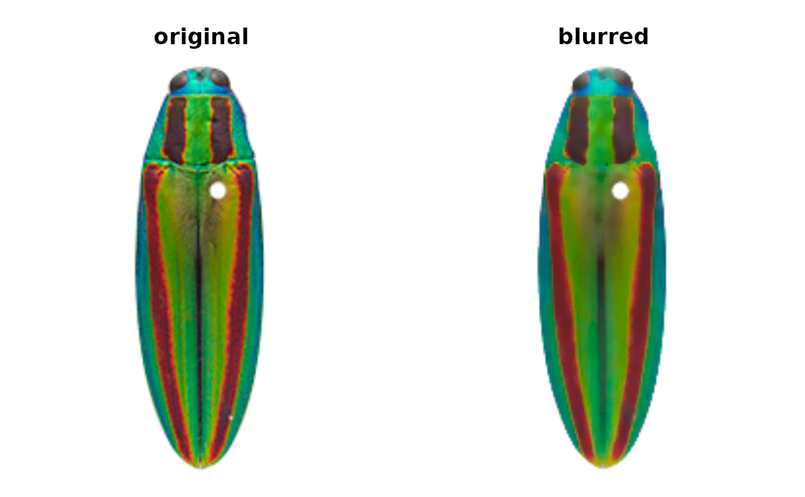
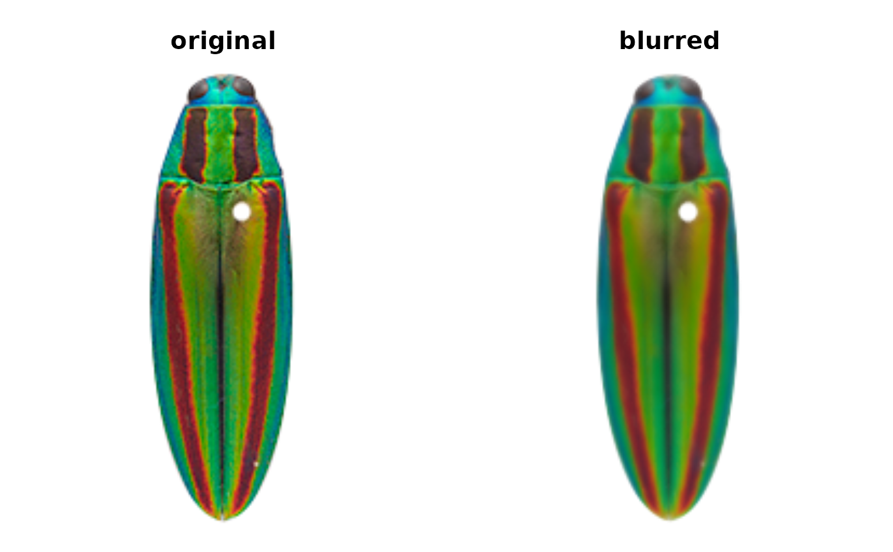
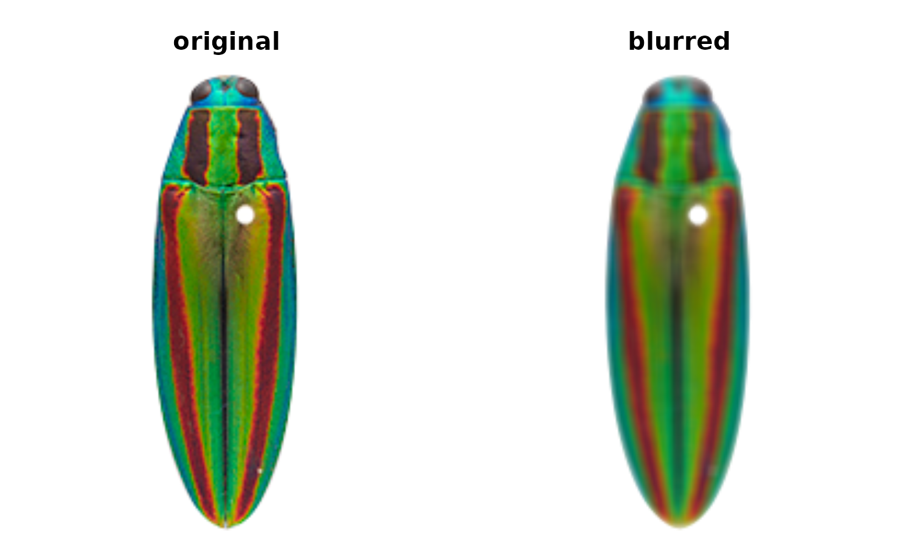
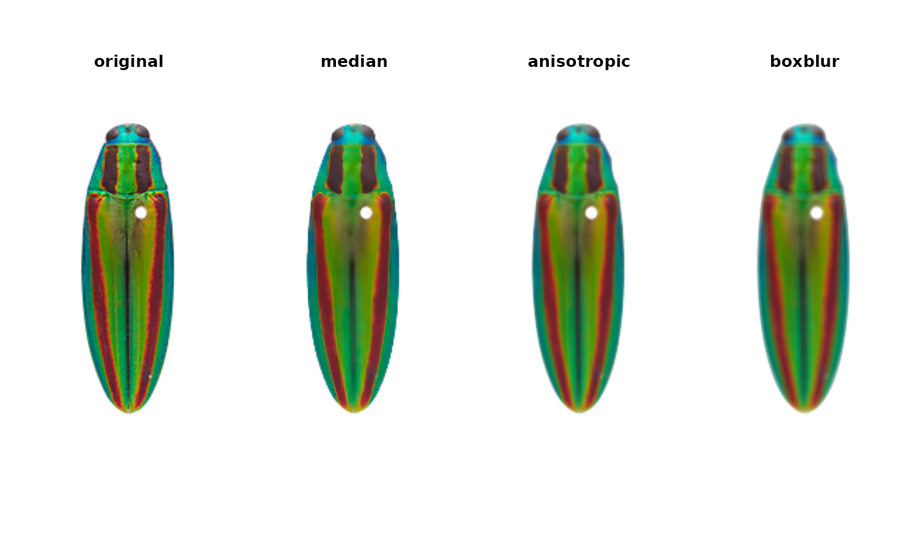

Blur an image
blurImage.RdBlurs an image using the one of five blur functions in imager.
Useful for decreasing image noise.
Arguments
- img
An image array, as read in by png::readPNG or readImage.
- blur_function
A string matching the name of an imager blur function. One of c("isoblur", "medianblur", "blur_anisotropic", "boxblur", "boxblur_xy").
- ...
Parameters passed to whichever
blur_functionis called.- plotting
Logical. Plot the blurred image next to the input for comparison?
Details
The parameters passed with the ... argument are specific
to each of the five blur functions; see their documentation for what to
specify: imager::isoblur, imager::medianblur, imager::boxblur,
imager::blur_anisotropic, imager::boxblur_xy. The medianblur and
blur_anisotropic functions are best for preserving edges.
Examples
img_path <- system.file("extdata/fulgidissima.png", package = "recolorize")
img <- readImage(img_path)
median_img <- blurImage(img, "medianblur", n = 5, threshold = 0.5)

anisotropic_img <- blurImage(img, "blur_anisotropic",
amplitude = 5, sharpness = 0.1)

boxblur_img <- blurImage(img, "boxblur", boxsize = 5)

# save current graphical parameters:
current_par <- graphics::par(no.readonly = TRUE)
graphics::layout(matrix(1:4, nrow = 1))
plotImageArray(img, "original")
plotImageArray(median_img, "median")
plotImageArray(anisotropic_img, "anisotropic")
plotImageArray(boxblur_img, "boxblur")

# and reset:
graphics::par(current_par)